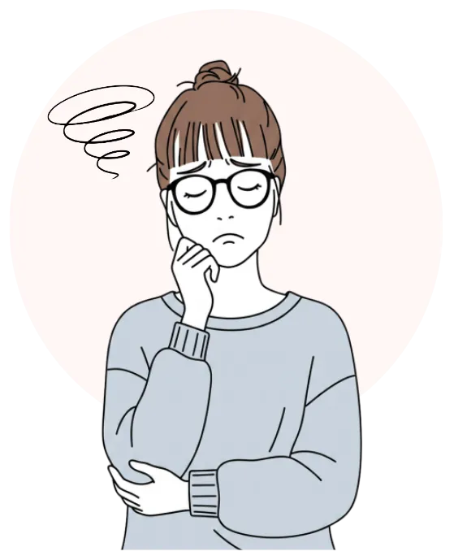
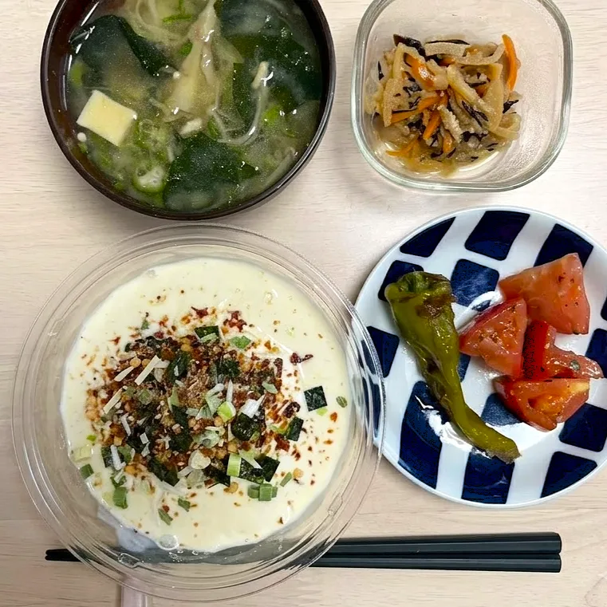
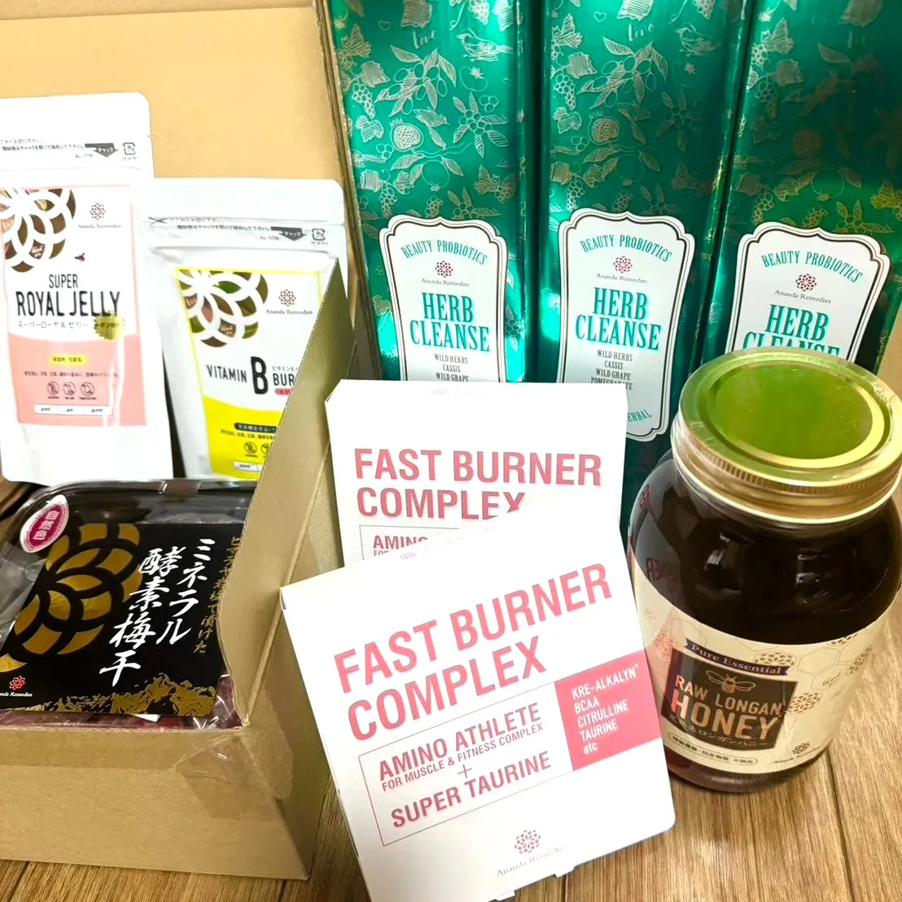
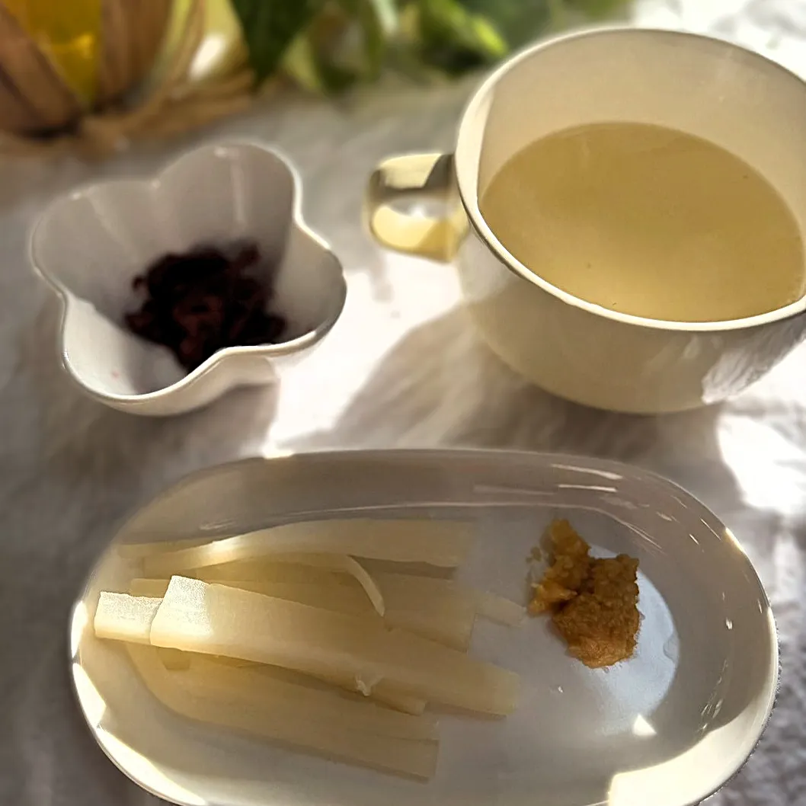

分子栄養学 ×
細胞から整えるファスティング
食欲は
我慢するものではなく、
整えるもの。
血糖値やホルモンバランスから食欲を整え、
頑張り続けなくても、自然と軽やかな体へ。
食欲コンサルタント・Loyell 主宰
秋本るみ（るーみん）
- エステティシャン歴 12年
- 分子栄養学認定カウンセラー
- 2020年 食欲コンサルタントとして活動開始
- 延べ100名以上の伴走サポート実績
「ただ痩せる」のではなく、 “食欲に振り回されない心と体”を整えるサポートをしています。
私自身も、
食に悩み続けていました。
1990年4月生まれ。兄3人の4兄妹。
大阪出身、大阪在住。
昔から食べることが大好き。
高校生のときにダイエットにハマり、 食事制限で10kg減量するも、 生理が止まり、摂食障害で 過食嘔吐を繰り返すように。
セラピーを受けつつ、徐々に回復しながら、 美容と健康に興味を強く持ち、19歳でエステ会社へ就職。
２年目には実績を認められ、チーフの役職につき、そこから副店長、店長と昇格。
20歳の頃、仕事をしながらも、『施術だけではお客様の美と健康をサポートできない』と感じ、栄養学の勉強を続ける。
会社でファスティングを取り扱うことになり、ファスティング指導を開始。
27歳の頃に、エステティックグランプリ関西部門エリアファイナル出場。解剖生理学を学び、エステ国際ライセンスINFAゴールドマスター取得。
30歳の頃、仕事のプレッシャーや、忙しさ、ストレスなどが重なり、体調を崩し、退職。
その年に、オンラインでファスティングサポートを始める。 自分自身も改めてファスティングと栄養学の知識を深め、実践することで、 ひどい生理痛と肌荒れを改善しながら、－６kg達成。
現在はこれまでの経験や学びをもとに、全国各地のお客様へオンラインでファスティングサポートや長期的な食欲コントロールサポートを行っている。
かつての私のように、食べることに悩み、自分を責めてしまう女性が、少しでも安心して、自分の体と向き合えるように。
そして、体が整うと、心に余裕が生まれます。余裕が生まれると、笑顔が増え、パートナーシップや人間関係も豊かになり、望む未来へのエネルギーが湧いてきます。
"あなた自身の可能性を、信じてほしい"
そんな想いで、Loyellを運営しています。
こんなお悩みはありませんか？
-
色んな健康法を試しているのに、
体重が変わらない -
病院へ行くほどでもないが、
不調が続いている -
PMSの時期になると、
体調が安定せず、イライラしてしまう。 -
我慢しては反動で食べてしまう、
を繰り返している -
朝起きるのがつらく、
いつも体が重だるい -
肌荒れや不調が続いていて、
自分に自信が持てない
なぜ、食べたくなってしまうのか
食欲を支配しているのはあなたの「意志」ではなく、脳とホルモンの「防御反応」です。

-
隠れ低栄養
カロリーは摂っていても栄養が不足している
-
血糖値の乱高下
血糖値の急激な上昇と低下によるエネルギー不足
-
過剰なストレスホルモン
脳が「食べる」指令を出すため、根性では抑えられません。
自分の体質に合う整え方で、
望む未来を手に入れる
「ファスティング＝ただ我慢するもの」
そんなイメージを持っていませんか？
Loyellでは、無理な食事制限ではなく、
血糖値やホルモンバランスから
"なぜ食べたくなってしまうのか"という根本原因にアプローチします。
努力や我慢ではなく、自分の体質と仕組みを理解することが、
体質改善と成功への最短ルートです。
-
Point-1
仕組みから整える
激しい運動や食事制限などの気合いや我慢より、無意識に選んでいる食事の「選択の仕組み」を見直します。
-
Point-2
血糖値を安定させる
分子栄養学の観点から、貧血や低糖質などの自分の体質を知り、血糖値を安定させることで、意志の力を使わずに食欲を押さえます。
-
Point-3
徹底した伴走で一生の習慣に
大切にしているのは、一時的に痩せることではなく、 "自分で整えられる＝自走できるようになること"。
プログラムが終わった後も、一人ひとりに合わせた個別カウンセリングを行い、卒業後も自走できる習慣が身に着きます。
ファスティングの流れ

Step 1
準備食
"まごはやさしい"の食事で少しずつ整える

Step 2
ファスティング
専用の酵素ドリンクでしっかりと栄養を

Step 3
回復食
スッキリ大根で腸に優しく食を戻す
よくあるご質問
ファスティングや食欲コントロールについて、よくいただくご質問にお答えします。
-
A. 専用ドリンクで血糖値を安定させながら進めるため、「思っていたより空腹感が少なかった」と感じる方が多いです。
-
A. お仕事や家事を続けながら取り組まれている方がほとんどです。
「体が軽く感じた」「集中しやすかった」というお声もいただいています。 -
A. ファスティングは、準備期間～終了後の食習慣まで含めて整えることが大切です。
血糖値を乱しにくい食べ方や、食欲を安定させるコツまでサポートしています。 -
A. 準備不足のまま始めてしまうと、頭痛やだるさが出ることがあります。
Loyellでは事前の食事調整や栄養状態を大切にしながら進めていきます。
実績
-
6年
学びと経験
自身の経験をもとにファスティング指導・食欲コンサルタントとして活動を始めて6年目です。
-
100名以上
サポート・伴走実績
食欲や不調のお悩みに寄り添ってきました。
-
95%
満足度
「安心して続けられた」というお声を多数いただいています。
日々のサポートや、リアルなお声を発信しています。
お客様の声
20代〜40代の女性を中心にご参加いただいています。
※オンラインサポートがメインのため、全国どこからでもご参加いただけます
※ 個人の感想です。効果には個人差があります。
Loyellのこだわり
結果が出る
ファスティング期間をどのように過ごせば良いのか、ガイドブックやサポートLINEで分かりやすく伴走するため、 挫折することなく最後まで変化を楽しみながら過ごせます。
平均2～4kgの減量、体脂肪率2～4%ダウンの方が続出！
空腹感を感じにくい
専用のドリンクで体と脳に栄養を補いながら行うので、空腹感を感じづらいメソッドです。
ご家族のご飯を作らないといけない方や、間食癖のある方でも問題なく取り組んで頂いています。
伴走型サポート
日常の食習慣やライフスタイル等のアドバイスもさせていただきます。
栄養や休息の取り方など、お悩みの不調改善ができるように、ファスティング後の食欲コントロールも一緒に考えていきしょう。
あなたに合ったプランを
まずはLINEにて、現在のお悩みやお体の状態をお聞かせください。
お一人おひとりに合わせてご提案しています。
ファスティングプラン
Fasting Plan3日〜10日間にかけて
ファスティングで体質改善を行います。
¥42,800/3日間～（送料別）
- ファスティング完全ガイドブック
- 毎日Lineサポート無制限
- ファスティング専用ドリンク
- ファスティングサポート品（マグマソルト・ミネラル酵素梅干しなど）
食欲コントロール講座
Appetite Control Courseファスティングを含め、1ヵ月～半年の長期的な
食欲コントロールの伴走を行います。
※金額はカウンセリングにて
プログラムのご参加について
-
以下の場合はご参加をお断りすることがあります。あらかじめご了承ください。
- 肝臓疾患、肝炎、肝硬変などの方
- 腎臓疾患、透析、腎不全などの方
- 悪性新生物(ガン) の方
- ステロイド投与中の方
- 妊婦、完全授乳中の方
- 精神疾患型糖尿病の方
- 免疫の弱い方、風邪、インフルエンザによくかかる方
- 前後2週間で抗生物質を飲む予定のある方
- 重度の貧血、へモグロビンが10以下の方
- 低コレステロール、T-CHO140以下の方
- 重度の低血糖症、痩せすぎ、体調がすぐれない方
COVID-19ワクチンや、その他ワクチンを前後3週間以内に打つ予定のある方は必ずご相談ください。
ご不安な点は事前のLINE相談でお気軽にお尋ねください。 -
- お支払い後のキャンセル・返金は原則として承っておりません
- プログラム開始前・お申込み日から3日以内であれば全額返金に対応いたします
- ご体調不良や特別な事情がある場合はLINEにてご相談ください
-
- プログラムの効果・成果には個人差があります。特定の結果を保証するものではありません
- 掲載の体験談・事例は個人の感想であり、すべての方に同様の効果が現れるわけではありません
- 本プログラムは医療行為ではなく、疾患の治療・診断を目的とするものではありません
- 健康上のご不安がある場合は、必ず医療機関にご相談の上ご参加ください
-
- 当サロンのプログラム料金は一律ではなく、事前カウンセリング時にお客様のお悩みや目標、サポート期間を丁寧にお伺いした上で決定いたします。実際のご参加費用につきましては、個別相談の中で、最適なプランとその確定金額をご案内させていただきます。